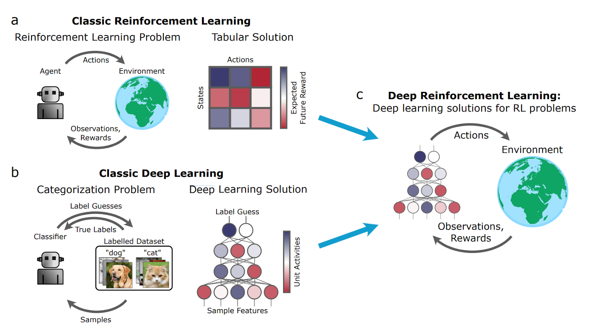
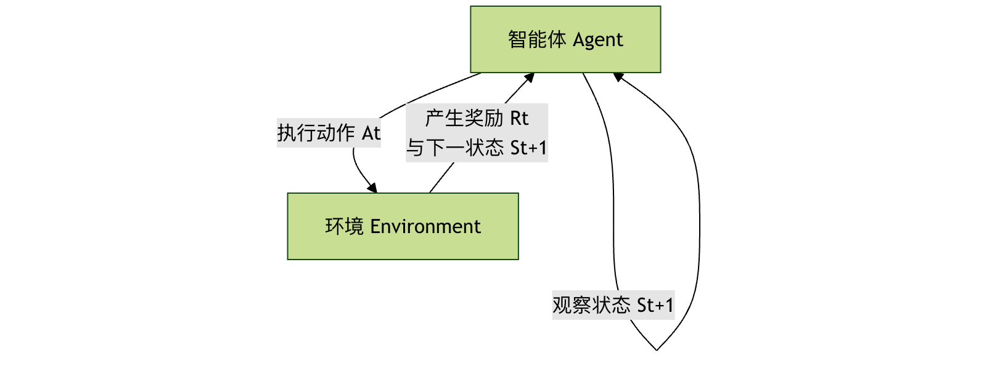

Deep Reinforcement Learning
Deep reinforcement learning is an exciting interdisciplinary direction in the field of artificial intelligence. We can break it down into two parts to understand it:
Reinforcement Learningis the core idea, which simulates the process of humans or animals learning through "trial and error". Imagine teaching a puppy a new command: when it does it right, you give it a treat as a reward; when it does it wrong, there is no reward or even a slight punishment. After many attempts, the puppy can learn to make the correct action in a specific situation to obtain rewards. The agent in reinforcement learning is like this puppy; it interacts with the environment and adjusts its behavioral policy based on the rewards it receives.
Deep Learningis a powerful tool. When the environment faced by reinforcement learning is very complex (such as video game screens, robot sensor data), traditional mathematical methods are difficult to directly extract useful features from it for decision-making. Deep learning, especially deep neural networks, excels at processing such high-dimensional, complex raw data (such as images, sound) and can automatically learn hierarchical feature representations of the data.
Therefore,Deep reinforcement learning = decision-making framework of reinforcement learning + perception and representation capabilities of deep learning. It enables agents to directly learn how to take optimal actions from complex raw inputs (such as pixels) to achieve long-term goals.

Core Concepts and Basic Framework
To understand deep reinforcement learning, you first need to grasp several core roles in its basic framework and the relationships among them.
Basic Elements of Reinforcement Learning
Agent
- Role: Learner and decision maker.
- Responsibility: Observe the state of the environment, select actions according to the learned policy, execute actions, and receive feedback (new state and reward) from the environment.
Environment
- Role: Everything external with which the agent interacts.
- Responsibility: Receive the agent's action, update its own state, and provide the corresponding reward.
State (s)
- Definition: A description of the specific situation of the environment at a certain moment. In deep reinforcement learning, states are usually high-dimensional, such as a frame of a game image.
Action (a)
- Definition: Choices the agent can make in a given state. For example, in a game, they might be "up", "left", "fire", etc.
Reward (r)
- Definition: An immediate feedback signal from the environment to the agent's action, a scalar value. The reward is the "compass" for the agent's learning, and its goal is to maximize the long-term cumulative reward.
Policy (π)
- Definition: The agent's behavioral guideline, a mapping function from states to actions. It tells the agent what action to take in a given state. The policy can be deterministic (
a = π(s)), or stochastic (a ~ π(a|s)）。
- Definition: The agent's behavioral guideline, a mapping function from states to actions. It tells the agent what action to take in a given state. The policy can be deterministic (
Value Function
- Definition: Used to evaluate how good a state or state-action pair is. It represents what can be obtained in the future starting from the current state (or after executing the current action).Expected cumulative reward。
- State-value function V(s): In state
s, the expected return obtainable by following the current policy. - Action-value function Q(s, a): In state
s, executing actiona, and then the expected return obtainable by following the current policy.
Interaction Process
The interaction between the agent and the environment is a continuous cyclical process, which can be clearly represented by the following flowchart:

This loop repeats continuously, and the agent collects a large amount of interaction data (s, a, r, s') and uses this data to improve its policy.
Major Algorithms of Deep Reinforcement Learning
The algorithm family of deep reinforcement learning is mainly divided into two major categories:Value-Based 和 Policy-Based, and theActor-Criticmethod that combines the advantages of both.
1. Value-Based Deep Q-Network
The core of this type of algorithm is to learn the optimalaction-value function Q(s, a). Once an accurate Q-function is learned, the optimal policy is simple: in each states, choose the action that can makeQ(s, a)the action with the maximuma。
Deep Q-Network (DQN)is a milestone work. It uses deep neural networks to approximate complex Q-functions.
Key technical innovations of DQN:
- Experience Replay: The agent stores interaction experiences
(s, a, r, s')in a memory buffer. During training, a batch of experiences is randomly sampled from the buffer for learning. This breaks the correlation among data, making training more stable and efficient. - Target Network: A "target network" with the same structure but slower parameter updates is used to compute learning targets (Q target values), while another "online network" is used for action selection and real-time updates. This solves the problem of the target values constantly moving during training and greatly improves stability.
A simplified DQN training process:
- Initialize the online network
Qand the target networkQ_target(with the same parameters), and clear the experience replay buffer. - The agent, based on the current state
s, with a certain probability randomly or according to theQnetwork selects an actiona。 - Execute the action, the environment returns a reward
rand a new states', and store the experience(s, a, r, s')in the replay buffer. - Randomly sample a batch of experiences from the replay buffer.
- For each sample, compute the target Q-value:
y = r + γ * max_a' Q_target(s', a'). Here,γis the discount factor, used to balance immediate rewards and future rewards. - 以
(y - Q(s, a))^2as the loss, update the online network'sQparameters via gradient descent. - Every certain number of steps, copy the parameters of the online network to the target network.
- Repeat steps 2-7.
Advantages and limitations:
- Advantages: Relatively high sample efficiency and relatively stable training.
- Limitations: It is inherently difficult to handle continuous action spaces (because it requires computing
max_a Q(s,a)), and it can usually only learn deterministic policies.
2. Policy-Based Policy Gradient Methods
These methods directly parameterize the policyπ(a|s; θ)(e.g., represented by a neural network) and optimize the policy parametersθto directly maximize the expected return.
Core idea: By computing the gradient of the expected returnJ(θ)with respect to the policy parametersθ(i.e., the policy gradient), and then updating the parameters along the gradient direction, the policy becomes better and better.
REINFORCE algorithmis a classic policy gradient algorithm. Its update formula is:θ ← θ + α * ∇_θ log π(a|s; θ) * G_twhereG_tis the cumulative reward from the current moment to the end of the episode,αis the learning rate.
Advantages and limitations:
- Advantages: Can directly learn stochastic policies and is naturally suitable for continuous action spaces.
- Limitations: Updates are based on the entire episode, resulting in high variance, unstable training, and low sample efficiency.
3. Actor-Critic Methods
The actor-critic framework cleverly combines value-based and policy-based methods, complementing each other's strengths.
- Actor: A policy network responsible for generating actions based on the state. It is like an actor who improves his or her "performance" (policy) under the guidance of a critic.
- CriticA value network (usually a Q-network or V-network) that evaluates the value of actions taken by the actor in a given state. It acts like a critic, scoring the actor's performance.
Workflow:
- The actor, based on the current state
sand its own policy, selects and executes an actiona。 - The environment returns a reward
rand a new states'。 - The critic, based on
(s, a, r, s')computes the TD error (Temporal-Difference Error, a signal that measures the difference between predicted value and actual value). - The critic uses this error to update its value estimation network, making its scoring more accurate.
- The actor uses the "scores" provided by the critic (such as TD error or advantage function) to update its policy network, making it more inclined to choose actions that receive high scores.
AdvantagesActor-critic methods generally have lower variance and are more stable than pure policy gradient methods (such as REINFORCE), while being better at handling continuous actions and stochastic policies than pure value methods (such as DQN).A3C, A2C, PPO, SACetc. are all very successful actor-critic algorithms.
Practice: Playing CartPole with DQN
Let's use a classic control problemCartPole(balance pole) to get an intuitive feel for DQN. In this environment, the cart can move left and right, and the goal is to keep the pole on the cart upright.
Environment Setup
We use the OpenAI Gym reinforcement learning toolkit.
Example
# !pip install gym numpy torch
import gym
import numpy as np
import random
import torch
import torch.nn as nn
import torch.optim as optim
import collections
# Create environment
env = gym.make('CartPole-v1')
state_dim = env.observation_space.shape[0] # State dimension: 4 (cart position, velocity, pole angle, angular velocity)
action_dim = env.action_space.n # Action dimension: 2 (left, right)
print(f"State space dimension: {state_dim}, Action space size: {action_dim}")
Define Q-Network
This is a simple fully connected neural network, with the state as input and the Q value for each action as output.
Example
def __init__(self, state_dim, action_dim):
super(DQN, self).__init__()
self.fc1 = nn.Linear(state_dim, 128) # First fully connected layer
self.fc2 = nn.Linear(128, 128) # Second fully connected layer
self.fc3 = nn.Linear(128, action_dim) # Output layer, one Q value per action
def forward(self, x):
x = torch.relu(self.fc1(x)) # Use ReLU activation function to introduce nonlinearity
x = torch.relu(self.fc2(x))
return self.fc3(x) # Output Q values, without activation function
Define Experience Replay Buffer
Used to store and sample past experiences.
Example
def __init__(self, capacity):
self.buffer = collections.deque(maxlen=capacity) # Double-ended queue, automatically discards old experiences
def add(self, state, action, reward, next_state, done):
self.buffer.append((state, action, reward, next_state, done))
def sample(self, batch_size):
transitions = random.sample(self.buffer, batch_size)
# Organize data into tensors stacked by column for efficient batch processing by the neural network
state, action, reward, next_state, done = zip(*transitions)
return (np.array(state), action, reward, np.array(next_state), done)
def size(self):
return len(self.buffer)
Define DQN Agent
Integrates the network, experience replay, and training logic.
Example
def __init__(self, state_dim, action_dim, lr=1e-3, gamma=0.98, epsilon=0.01,
target_update_freq=10, buffer_size=10000, batch_size=64):
self.action_dim = action_dim
self.q_net = DQN(state_dim, action_dim) # Online network
self.target_q_net = DQN(state_dim, action_dim) # Target network
self.target_q_net.load_state_dict(self.q_net.state_dict()) # Same initial parameters
self.optimizer = optim.Adam(self.q_net.parameters(), lr=lr) # Optimizer
self.gamma = gamma # Discount factor
self.epsilon = epsilon # Exploration rate (final)
self.target_update_freq = target_update_freq # Target network update frequency
self.batch_size = batch_size
self.buffer = ReplayBuffer(buffer_size)
self.count = 0 # Record update steps
def take_action(self, state, epsilon=None):
"""Select action according to epsilon-greedy policy"""
if epsilon is None:
epsilon = self.epsilon
if np.random.random() < epsilon:
return np.random.randint(self.action_dim) # Exploration: random choice
else:
state = torch.tensor(state, dtype=torch.float).unsqueeze(0) # Add batch dimension
with torch.no_grad():
q_values = self.q_net(state)
return q_values.argmax().item() # Exploitation: choose the action with the largest Q value
def update(self):
"""Sample from experience replay buffer and update the network"""
if self.buffer.size() < self.batch_size:
return
# 1. Sample
states, actions, rewards, next_states, dones = self.buffer.sample(self.batch_size)
# Convert to PyTorch tensors
states = torch.tensor(states, dtype=torch.float)
actions = torch.tensor(actions).unsqueeze(1) # Shape becomes [batch_size, 1], convenient for gather operation
rewards = torch.tensor(rewards, dtype=torch.float).unsqueeze(1)
next_states = torch.tensor(next_states, dtype=torch.float)
dones = torch.tensor(dones, dtype=torch.float).unsqueeze(1)
# 2. Calculate current Q value (Q(s, a))
current_q_values = self.q_net(states).gather(1, actions) # Only extract the Q value corresponding to the executed action a
# 3. Calculate target Q value (r + γ * max_a' Q_target(s', a'))
with torch.no_grad():
next_q_values = self.target_q_net(next_states).max(1)[0].unsqueeze(1) # Take the maximum Q value of the next state
target_q_values = rewards + self.gamma * next_q_values * (1 - dones) # If the episode ends (done=1), there is no future reward
# 4. Calculate loss (mean squared error)
loss = nn.MSELoss()(current_q_values, target_q_values)
# 5. Update the online network with gradient descent
self.optimizer.zero_grad()
loss.backward()
# Optional: gradient clipping to prevent gradient explosion
# torch.nn.utils.clip_grad_norm_(self.q_net.parameters(), max_norm=10)
self.optimizer.step()
self.count += 1
# 6. Periodically update the target network
if self.count % self.target_update_freq == 0:
self.target_q_net.load_state_dict(self.q_net.state_dict())
Training Loop
Example
"""Train the agent"""
return_list = [] # Record the total reward for each episode
epsilon = initial_epsilon
for i_episode in range(num_episodes):
state, _ = env.reset()
episode_return = 0
done = False
for step in range(max_steps):
# 1. Select and execute action
action = agent.take_action(state, epsilon) # Use decayed exploration rate
next_state, reward, done, truncated, _ = env.step(action)
# 2. Store experience
agent.buffer.add(state, action, reward, next_state, done)
state = next_state
episode_return += reward
# 3. Update network
agent.update()
if done or truncated:
break
# Exploration rate decay
epsilon = max(agent.epsilon, epsilon * epsilon_decay)
return_list.append(episode_return)
if (i_episode + 1) % 50 == 0:
print(f"Episode: {i_episode+1}, Average Reward (last 50 episodes): {np.mean(return_list[-50:]):.1f}, Exploration Rate: {epsilon:.3f}")
print("Training complete!")
return return_list
# Create the agent and start training
agent = DQNAgent(state_dim, action_dim, lr=1e-3, gamma=0.99, epsilon=0.01)
returns = train_agent(env, agent, num_episodes=300)
Test the Trained Agent
Example
"""Test the agent's performance"""
total_rewards = []
for i in range(num_episodes):
state, _ = env.reset()
episode_return = 0
done = False
while not done:
if render:
env.render() # Visualize the environment; when running locally you can see the cart balancing the pole
action = agent.take_action(state) # Use minimal exploration rate during testing (i.e., pure exploitation)
next_state, reward, done, truncated, _ = env.step(action)
state = next_state
episode_return += reward
if done or truncated:
break
total_rewards.append(episode_return)
print(f"Test Episode {i+1}: Total Reward = {episode_return}")
env.close()
print(f"Average Test Reward: {np.mean(total_rewards):.1f}")
# Test the agent
test_agent(env, agent, num_episodes=3, render=False) # Set render=False in non-GUI environments
Challenges and Future Directions of Deep Reinforcement Learning
Despite its great success, deep reinforcement learning still faces many challenges:
- Low sample efficiency: It usually requires far more interactive data than humans or traditional methods to learn a task.
- Unstable training: Very sensitive to hyperparameters (learning rate, network structure, etc.), and the training process can easily diverge.
- Reward design is difficult: Designing a reward function that correctly guides the agent to achieve the final goal is itself a challenge.
- Safety and interpretability: How to ensure that the agent's behavior is safe, reliable, and aligned with expectations, and to understand its decision-making process.
Future research is moving toward more efficient algorithms (such as model-based reinforcement learning), stronger representation learning, multi-task and meta-learning, and safe alignment with the real world.
Summary and Exercises
Deep reinforcement learning combines the perception capabilities of deep learning with the decision-making framework of reinforcement learning, enabling machines to learn to accomplish advanced tasks in complex environments. You have learned its core concepts, major algorithm families, and gained hands-on experience with the DQN practice code.
Exercises and Reflection:
- Modify the code: Try adjusting the hyperparameters in
DQNAgent(such aslr,gamma,batch_size), and observe their impact on training speed and final performance. - Change the environment: Try applying the code to other Gym environments, such as
MountainCar-v0或LunarLander-v2. Be sure to adjust the state and action dimensions. - Algorithm comparison: Read about and try to implement a simple policy gradient algorithm (such as REINFORCE) to solve the CartPole problem, and compare its differences from DQN in training stability and sample efficiency.
- Further exploration: Choose a modern advanced algorithm (such as PPO or SAC), read its paper or open-source implementation, and understand how it solves problems present in DQN or policy gradients.
Click me to share notes
<p style="font-size:14px;">Notes need to be an extension of this article's content!</p><br><p style="font-size:12px;"><a href="../tougao.html" target="_blank">Article submission, click here</a></p><p style="font-size:14px;"><a href="../w3cnote/runoob-user-test-intro.html" target="_blank">How to get registration invitation code</a></p><h3 class="text-muted"><i class="fa fa-info-circle" aria-hidden="true"></i> Before sharing notes, you must <a href=";.html" class="runoob-pop">log in</a>!</h3><p><a href="../w3cnote/runoob-user-test-intro.html" target="_blank">How to get registration invitation code</a></p>